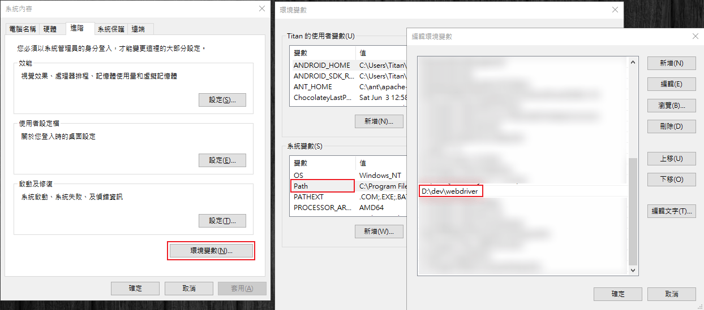

<!DOCTYPE html>
<html>
<head><meta name="generator" content="Hexo 3.8.0">
  <meta charset="utf-8">
  <meta http-equiv="X-UA-Compatible" content="IE=edge">
  
  <title>Python Selenium 學習筆記 | Titangene Blog</title>
  <meta name="description" content="利用 blog 紀錄學習歷程">
  <meta name="keywords" content="">
  <meta name="HandheldFriendly" content="True">
  <meta name="apple-mobile-web-app-capable" content="yes">
  <link rel="shortcut icon" href="/favicon.ico">
  <link rel="alternate" href="/atom.xml" title="Titangene Blog">
  <meta name="viewport" content="width=device-width, initial-scale=1, maximum-scale=1">
  <meta name="description" content="Python">
<meta property="og:type" content="article">
<meta property="og:title" content="Python Selenium 學習筆記">
<meta property="og:url" content="https://titangene.github.io/article/python-selenium.html">
<meta property="og:site_name" content="Titangene Blog">
<meta property="og:description" content="Python">
<meta property="og:locale" content="zh-tw">
<meta property="og:image" content="https://titangene.github.io/images/python-selenium/python-selenium_set-env.png">
<meta property="og:updated_time" content="2018-11-22T08:37:36.725Z">
<meta name="twitter:card" content="summary">
<meta name="twitter:title" content="Python Selenium 學習筆記">
<meta name="twitter:description" content="Python">
<meta name="twitter:image" content="https://titangene.github.io/images/python-selenium/python-selenium_set-env.png">

  <link href="https://fonts.googleapis.com/css?family=Inconsolata|Titillium+Web" rel="stylesheet">
  <link href="https://fonts.googleapis.com/css?family=Roboto+Mono" rel="stylesheet">
  <link href="https://cdnjs.cloudflare.com/ajax/libs/node-waves/0.7.5/waves.min.css" rel="stylesheet">
  <link rel="stylesheet" href="/style.css">
  <script>
    function setLoadingBarProgress(num) {
      document.getElementById('loading-bar').style.width=num+"%";
    }
  </script>
</head>
</html>
<body>
  <div id="loading-bar-wrapper">
  <div id="loading-bar"></div>
</div>


  <script>setLoadingBarProgress(20)</script>
  <header class="l_header">
	<div class="wrapper">
		<div class="nav-main container container--flex">
			<a class="logo flat-box" href="/">
				Titangene Blog
			</a>
			<div class="menu">
				<ul class="h-list">
					
						<li>
							<a class="flat-box nav-home" href="/">
								Home
							</a>
						</li>
					
						<li>
							<a class="flat-box nav-archives" href="/archives">
								Archives
							</a>
						</li>
					
				</ul>
				<div class="underline"></div>
			</div>
			
				<div class="m_search">
					<form name="searchform" class="form u-search-form">
						<input type="text" class="input u-search-input" placeholder="Search">
						<span class="icon icon-search"></span>
					</form>
				</div>
			
			<ul class="switcher h-list">
				
					<li class="s-search"><a href="javascript:void(0)"><span class="icon icon-search flat-box"></span></a></li>
				
				<li class="s-menu"><a href="javascript:void(0)"><span class="icon icon-menu flat-box"></span></a></li>
			</ul>
		</div>
		
		<div class="nav-sub container container--flex">
			<a class="logo" href="javascript:void(0)">
				Word of Forks
			</a>

			<ul class="switcher h-list">
				<li class="s-comment"><a href="javascript:void(0)"><span class="icon icon-chat_bubble_outline flat-box"></span></a></li>
				<li class="s-top"><a href="javascript:void(0)"><span class="icon icon-arrow_upward flat-box"></span></a></li>
				<li class="s-toc"><a href="javascript:void(0)"><span class="icon icon-format_list_numbered flat-box"></span></a></li>
			</ul>
		</div>
	</div>
</header>
<aside class="menu-phone">
	<nav>
		
			<a href="/" class="nav-home nav">
				Home
			</a>
		
			<a href="/archives" class="nav-archives nav">
				Archives
			</a>
		
	</nav>
</aside>

    <script>setLoadingBarProgress(40);</script>
  <div class="l_body">
    <div class='container clearfix'>
      <div class='l_main'>
        <article id="post-python-selenium" class="post white-box article-type-post" itemscope="" itemprop="blogPost">
	<section class="meta">
	<h2 class="title">
  	<a href="/article/python-selenium.html">
    	Python Selenium 學習筆記
    </a>
  </h2>
	<time>
	  2018-11-22
	</time>
	
	</section>
	
		<section class="toc-wrapper"><ol class="toc"><li class="toc-item toc-level-2"><a class="toc-link" href="#安裝-Selenium"><span class="toc-number">1.</span> <span class="toc-text">安裝 Selenium</span></a></li><li class="toc-item toc-level-2"><a class="toc-link" href="#下載-webdriver"><span class="toc-number">2.</span> <span class="toc-text">下載 webdriver</span></a><ol class="toc-child"><li class="toc-item toc-level-3"><a class="toc-link" href="#為-webdriver-設定環境變數"><span class="toc-number">2.1.</span> <span class="toc-text">為 webdriver 設定環境變數</span></a></li></ol></li><li class="toc-item toc-level-2"><a class="toc-link" href="#使用-Selenium"><span class="toc-number">3.</span> <span class="toc-text">使用 Selenium</span></a></li><li class="toc-item toc-level-2"><a class="toc-link" href="#爬蟲範例"><span class="toc-number">4.</span> <span class="toc-text">爬蟲範例</span></a></li><li class="toc-item toc-level-2"><a class="toc-link" href="#參考連結"><span class="toc-number">5.</span> <span class="toc-text">參考連結</span></a></li></ol></section>
	
	<section class="article typo">
  	<div class="article-entry" itemprop="articleBody">
    	<p>Python</p>
<a id="more"></a>
<h2 id="安裝-Selenium"><a href="#安裝-Selenium" class="headerlink" title="安裝 Selenium"></a>安裝 Selenium</h2><pre><code class="shell">$ pip install selenium
# or
$ conda install -c conda-forge selenium
</code></pre>
<h2 id="下載-webdriver"><a href="#下載-webdriver" class="headerlink" title="下載 webdriver"></a>下載 webdriver</h2><ul>
<li>Firefox web driver：<a href="https://github.com/mozilla/geckodriver/releases/" target="_blank" rel="noopener">https://github.com/mozilla/geckodriver/releases/</a></li>
<li>Chrome web driver：<a href="https://sites.google.com/a/chromium.org/chromedriver/" target="_blank" rel="noopener">https://sites.google.com/a/chromium.org/chromedriver/</a></li>
</ul>
<p>如要下載其他瀏覽器的 web driver，可至 <a href="https://www.seleniumhq.org/about/platforms.jsp" target="_blank" rel="noopener">Platforms Supported by Selenium</a> 此頁面下載。</p>
<p>將 webdriver 放在你想放的目錄內，可以選擇放在 global 或 local：</p>
<ul>
<li>global：為了要讓所有專案都可以使用，需要為 webdriver 設定環境變數。像我是放在 <code>D:\dev\webdriver</code> 此目錄中。</li>
<li>local：放在該專案目錄中，在程式碼中需要指定 webdriver 的路徑位置，因為考慮到每個專案所使用的 webdriver 版本不同，需要各別管理。</li>
</ul>
<h3 id="為-webdriver-設定環境變數"><a href="#為-webdriver-設定環境變數" class="headerlink" title="為 webdriver 設定環境變數"></a>為 webdriver 設定環境變數</h3><p>將 webdriver 的所在目錄設定在 <code>Path</code> 環境目錄</p>
<p></p>
<h2 id="使用-Selenium"><a href="#使用-Selenium" class="headerlink" title="使用 Selenium"></a>使用 Selenium</h2><pre><code class="python">from selenium import webdriver
</code></pre>
<p>使用 chrome 或 firefox 的 driver</p>
<pre><code class="python">driver = webdriver.Firefox()
driver = webdriver.Chrome()
</code></pre>
<p>指定 webdriver 的位置</p>
<pre><code class="python">driver = webdriver.Firefox(executable_path=&#39;D:\dev\webdriver\geckodriver&#39;)
driver = webdriver.Chrome(executable_path=&#39;D:\dev\webdriver\chromedriver&#39;)
</code></pre>
<p>開啟某網頁</p>
<pre><code class="python">driver.get(&#39;https://www.google.com.tw&#39;)
</code></pre>
<p>回傳頁面的標題，方便確認目前 driver 跑到哪一頁面</p>
<pre><code class="python">driver.title
</code></pre>
<p>瀏覽器的上一頁和下一頁</p>
<pre><code class="python">driver.back()
driver.forward()
</code></pre>
<p>螢幕截圖</p>
<pre><code class="python">driver.save_screenshot(&#39;screenshot.png&#39;)
</code></pre>
<p>回傳網頁原始碼，之後就可以利用 BeautifulSoup 來解析 HTML 原始碼</p>
<pre><code class="python">driver.page_source
</code></pre>
<p>移動並點擊至指定文字的某連結</p>
<pre><code class="python">driver.find_element_by_link_text(&#39;你想找的文字連結&#39;)
driver.find_element_by_partial_link_text(&#39;部分連結文字&#39;)
driver.find_elements_by_link_text(&#39;你想找的文字連結&#39;)
driver.find_elements_by_partial_link_text(&#39;部分連結文字&#39;)
</code></pre>
<p>點擊指定 element</p>
<pre><code class="python">element = driver.find_element_by_link_text(&#39;你想找的文字連結&#39;)
element.click()
</code></pre>
<p>在輸入欄位輸入文字</p>
<pre><code class="python">element = driver.find_element_by_name(&#39;search&#39;)
element.send_keys(&#39;some text&#39;)
</code></pre>
<p>清空輸入欄位內的文字</p>
<pre><code class="python">element.clear()
</code></pre>
<p>找 element</p>
<pre><code class="python"># 用各種方式找一個 element
driver.find_element_by_id()
driver.find_element_by_name()
driver.find_element_by_xpath()
driver.find_element_by_tag_name()
driver.find_element_by_class_name()
driver.find_element_by_css_selector()

# 用各種方式找多個 element
driver.find_elements_by_name()
driver.find_elements_by_xpath()
driver.find_elements_by_tag_name()
driver.find_elements_by_class_name()
driver.find_elements_by_css_selector()
</code></pre>
<p>執行最後記得要關閉 webdriver</p>
<pre><code class="python">driver.close()
</code></pre>
<h2 id="爬蟲範例"><a href="#爬蟲範例" class="headerlink" title="爬蟲範例"></a>爬蟲範例</h2><pre><code class="python">from selenium import webdriver

driver = webdriver.Chrome(executable_path=&#39;D:\dev\webdriver\chromedriver&#39;)
driver.get(&#39;https://www.google.com.tw&#39;)

print(driver.title)   # Google

search_element = driver.find_element_by_name(&#39;q&#39;)
search_element.send_keys(&#39;python&#39;)
search_element.submit()

print(driver.title)   # python - Google 搜尋
</code></pre>
<h2 id="參考連結"><a href="#參考連結" class="headerlink" title="參考連結"></a>參考連結</h2><ul>
<li><a href="https://hk.saowen.com/a/7644c8e3c82a21827c1fc25737e0588a5842275e6f88095df5ad60cf546a8558" target="_blank" rel="noopener">Python+selenium鼠標、鍵盤事件 - 掃文資訊</a></li>
<li><a href="https://selenium-python-zh.readthedocs.io/en/latest/waits.html" target="_blank" rel="noopener">5. 等待頁面加載完成(Waits) — Selenium-Python中文文檔 2 documentation</a></li>
</ul>

  	</div>
	  
		
	
		<div class="art-item-footer">
				
				
					<span class="art-item-right">next：<a href="/article/vscode-jupyter-python.html" rel="next" title="在 VS Code 上使用 Jupyter Notebook">
						在 VS Code 上使用 Jupyter Notebook
					</a><i class="icon icon-chevron-thin-right"></i></span>
				
		</div>
	
	</section>
	
		<section id="comments">
			<div id="disqus_thread"></div>
		</section>
	
</article>
<script>
	window.subData = {
		title: 'Python Selenium 學習筆記',
		tools: true
	}
</script>

      </div>
      <aside class='l_side'>
        
  <section class="m_widget about">
  
  
  
  <div class="header">Titangene</div>
  <div class="content">
      <div class="desc">利用 blog 紀錄學習歷程</div>
  </div>
  <div class="content">
      <meta itemprop="url" content="https://titangene.github.io">
      
      <div class="social-wrapper">
      
          <a itemprop="sameAs" href="https://github.com/titangene" class="social github" target="_blank" rel="external">
              <span class="icon icon-github"></span>
          </a>
      
          <a itemprop="sameAs" href="https://www.facebook.com/titangene.tw" class="social facebook" target="_blank" rel="external">
              <span class="icon icon-facebook"></span>
          </a>
      
          <a itemprop="sameAs" href="https://www.instagram.com/titangene/" class="social instagram" target="_blank" rel="external">
              <span class="icon icon-instagram"></span>
          </a>
      
          <a itemprop="sameAs" href="/atom.xml" class="social rss" target="_blank" rel="external">
              <span class="icon icon-rss"></span>
          </a>
      
      </div>
      
  </div>
</section>

  
<section class="m_widget facebook_page">
    <div class="fb-page" data-href="https://www.facebook.com/titangene.blog/" data-width="250" data-small-header="false" data-adapt-container-width="false" data-hide-cover="false" data-show-facepile="true">
        <blockquote cite="https://www.facebook.com/titangene.blog/" class="fb-xfbml-parse-ignore">
            <p>
                <a href="https://www.facebook.com/titangene.blog/" class="social facebook" target="_blank">
                    <span class="icon icon-facebook"></span>
                </a>
            </p>
            <p><a href="https://www.facebook.com/titangene.blog/">Titangene Blog</a></p>
            <p>Loading...</p>
        </blockquote>
    </div>
</section>


  
<section class="m_widget recent">
    <div class="header">Recents</div>
    <div class="content">
        
        <ul class="entry">
        
            <li>
                <a itemprop="url" class="flat-box" href="/article/python-selenium.html">
                    <time>2018-11-22</time>
                    <div class="name">Python Selenium 學習筆記</div>
                </a>
            </li>
        
            <li>
                <a itemprop="url" class="flat-box" href="/article/vscode-jupyter-python.html">
                    <time>2018-11-19</time>
                    <div class="name">在 VS Code 上使用 Jupyter Notebook</div>
                </a>
            </li>
        
            <li>
                <a itemprop="url" class="flat-box" href="/article/create-a-virtual-environment-and-manage-dependencies-with-conda.html">
                    <time>2018-11-19</time>
                    <div class="name">用 Conda 建立虛擬環境和管理相依套件</div>
                </a>
            </li>
        
            <li>
                <a itemprop="url" class="flat-box" href="/article/windows-subsystem-for-linux.html">
                    <time>2018-11-17</time>
                    <div class="name">Windows Subsystem for Linux (WSL)</div>
                </a>
            </li>
        
            <li>
                <a itemprop="url" class="flat-box" href="/article/github-url-shortener.html">
                    <time>2018-11-01</time>
                    <div class="name">GitHub 縮網址服務 Git.io</div>
                </a>
            </li>
        
        </ul>
        
    </div>
</section>

      </aside>
      <script>setLoadingBarProgress(60);</script>
    </div>
  </div>
  <footer id="footer" class="clearfix">
	<div class="social-wrapper">
  	
      
        <a href="https://github.com/titangene" class="social github" target="_blank" rel="external">
          <span class="icon icon-github"></span>
        </a>
      
        <a href="https://www.facebook.com/titangene.tw" class="social facebook" target="_blank" rel="external">
          <span class="icon icon-facebook"></span>
        </a>
      
        <a href="https://www.instagram.com/titangene/" class="social instagram" target="_blank" rel="external">
          <span class="icon icon-instagram"></span>
        </a>
      
        <a href="/atom.xml" class="social rss" target="_blank" rel="external">
          <span class="icon icon-rss"></span>
        </a>
      
    
  </div>
  <div>
    © 2018 <span itemprop="copyrightHolder">Titangene</span>
  </div>
  <div>
    Powered by <a href="https://hexo.io/" class="codename">Hexo</a> - 
    Theme <a href="https://github.com/stkevintan/hexo-theme-material-flow" class="codename">MaterialFlow</a>
  </div>
</footer>


  <script>setLoadingBarProgress(80);</script>
  
<script>
  var disqus_shortname = 'titangene-blog';
  
  var disqus_url = 'https://titangene.github.io/article/python-selenium.html';
  
  (function(){
    var dsq = document.createElement('script');
    dsq.type = 'text/javascript';
    dsq.async = true;
    dsq.src = '//' + disqus_shortname + '.disqus.com/embed.js';
    (document.getElementsByTagName('head')[0] || document.getElementsByTagName('body')[0]).appendChild(dsq);
  })();
</script>


<script src="//cdnjs.cloudflare.com/ajax/libs/jquery/2.1.4/jquery.min.js"></script>
<script src="//cdnjs.cloudflare.com/ajax/libs/node-waves/0.7.5/waves.min.js"></script>
<script src="//cdnjs.cloudflare.com/ajax/libs/scrollReveal.js/3.3.2/scrollreveal.min.js"></script>
<script src="/js/jquery.fitvids.js"></script>
<script>
	var GOOGLE_CUSTOM_SEARCH_API_KEY = "";
	var GOOGLE_CUSTOM_SEARCH_ENGINE_ID = "";
	var ALGOLIA_API_KEY = "";
	var ALGOLIA_APP_ID = "";
	var ALGOLIA_INDEX_NAME = "";
  var AZURE_SERVICE_NAME = "";
  var AZURE_INDEX_NAME = "";
  var AZURE_QUERY_KEY = "";
  var BAIDU_API_ID = "";
  var SEARCH_SERVICE = "hexo";
  var ROOT = "/"||"/";
  if(!ROOT.endsWith('/'))ROOT += '/';
</script>
<script src="/js/search.js"></script>
<script src="/js/app.js"></script>


  
<div id="fb-root"></div>
<script>
  window.fbAsyncInit = function() {
    FB.init({
      appId            : "",
      autoLogAppEvents : true,
      xfbml            : true,
      version          : "v2.11"
    });
  };
  (function(d, s, id){
      var js, fjs = d.getElementsByTagName(s)[0];
      if (d.getElementById(id)) {return;}
      js = d.createElement(s); js.id = id;
      js.src = "//connect.facebook.net/zh_TW/sdk.js#xfbml=1&version=v2.11&appId=";
      fjs.parentNode.insertBefore(js, fjs);
    }(document, "script", "facebook-jssdk"));
</script>

  
<script src="https://cdnjs.cloudflare.com/ajax/libs/highlight.js/9.12.0/highlight.min.js"></script>
<script>
hljs.initHighlightingOnLoad();
</script>

  <script>setLoadingBarProgress(100);</script>
</body>
</html>
